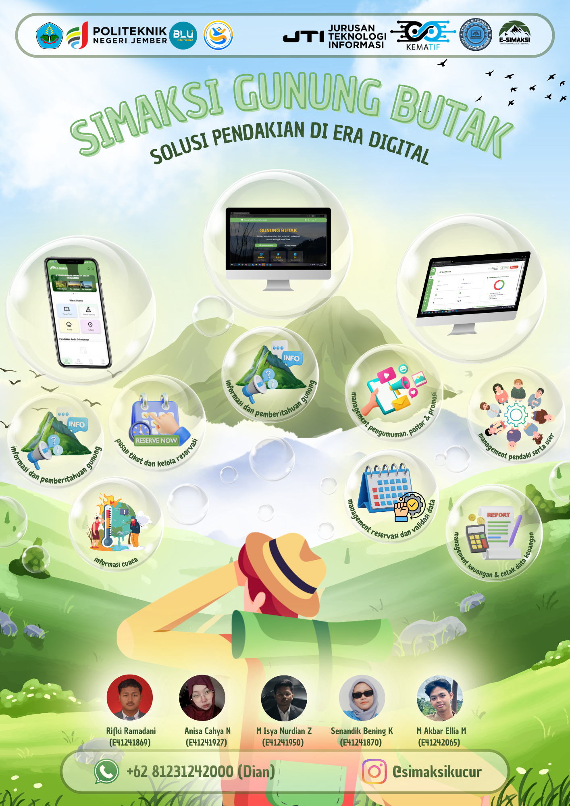
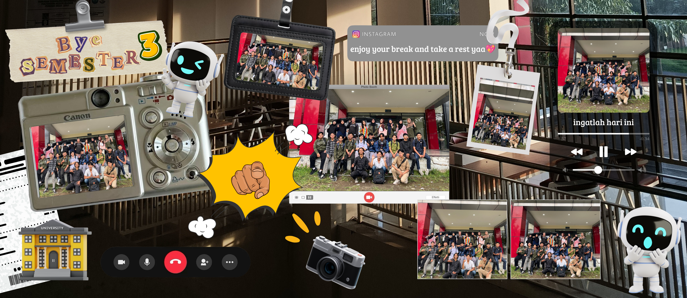
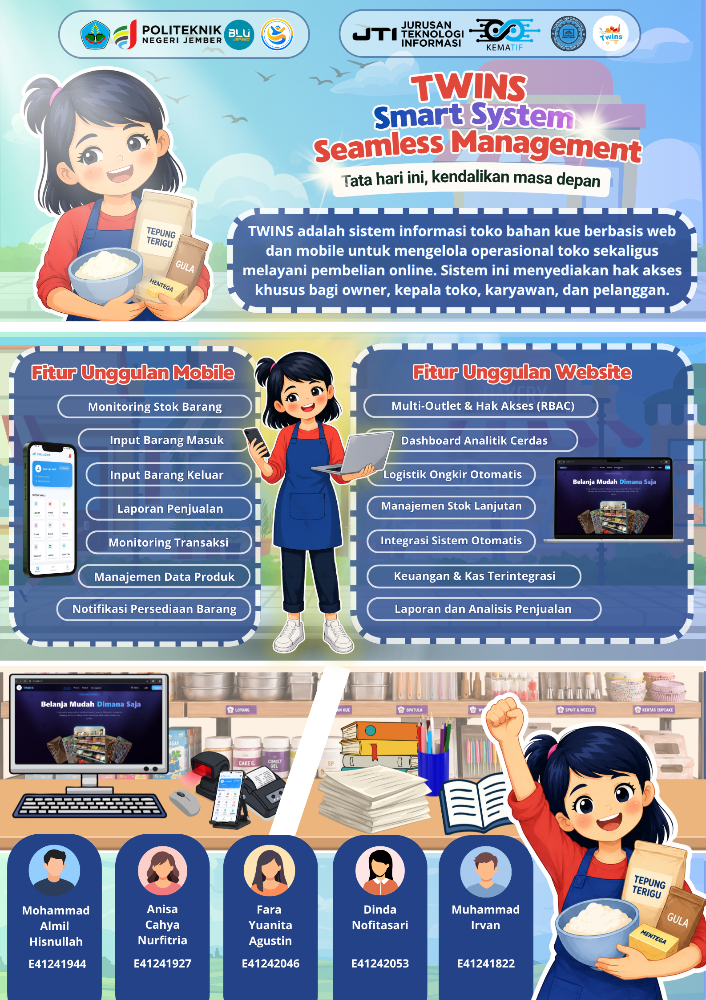
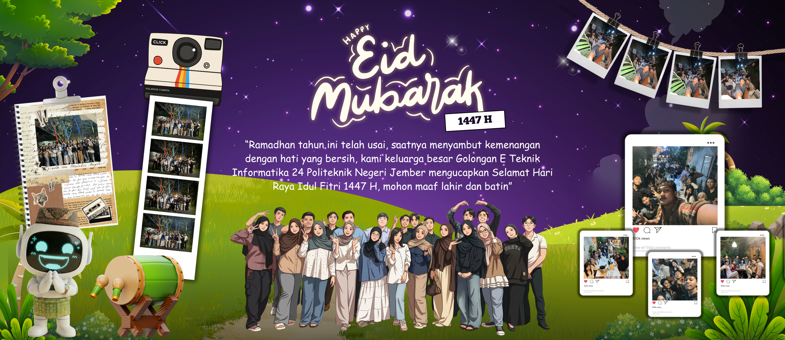

Twins: Solusi Terintegrasi Manajemen Toko Multi-Cabang
Tentang Proyek
Twins adalah sistem manajemen toko modern yang dirancang khusus untuk bisnis retail multi-cabang guna menjamin kelancaran operasional tanpa hambatan. Dengan mengusung arsitektur Offline-First, Twins memastikan aktivitas penjualan di setiap gerai fisik tetap berjalan 100% normal dan responsif, bahkan saat koneksi internet terputus atau tidak stabil.
Fitur Utama & Keunggulan:
- Dukungan Multi-Cabang: Pantau dan kelola stok serta penjualan dari banyak outlet dalam satu pintu dengan sinkronisasi pintar.
- Operasional Offline-First: Transaksi kasir tetap berjalan lancar tanpa koneksi internet; sinkronisasi otomatis ke server pusat saat internet kembali aktif.
- Sinkronisasi Real-Time (Cloud & Lokal): Penyelarasan data produk, transaksi, dan stok secara otomatis tanpa perlu intervensi manual.
- Desain Minimalis & Mobile-Friendly: Antarmuka yang intuitif dan mudah dipahami, menjamin performa cepat di berbagai perangkat, baik desktop kasir maupun smartphone admin.
Bagaimana Twins Bekerja?
- Di Toko Fisik (Offline/Online): Kasir melayani pelanggan menggunakan aplikasi lokal. Jika internet mati, penjualan tetap lancar. Saat internet menyala, data penjualan langsung terkirim ke pusat.
- Di Ranah Digital (Online): Pelanggan menjelajahi produk dan melakukan pemesanan secara mandiri hanya melalui Website.
- Sinkronisasi Otomatis: Sistem pusat secara cerdas memperbarui data stok di website berdasarkan penjualan offline di cabang, dan sebaliknya.
Galeri & Poster



